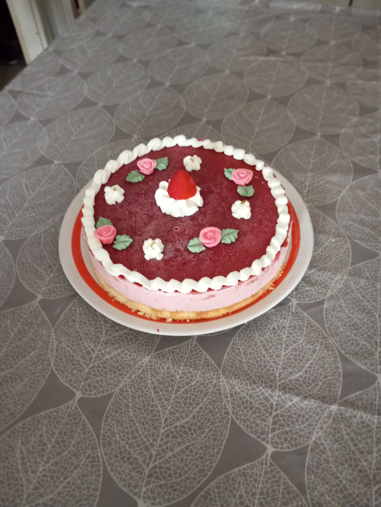

Bavarois

Temps de préparation: 1h
Temps de cuisson: 15 minutes
Difficulté: Moyenne
Ingrédients (8 personnes):
Préparation:
Temps de cuisson: 15 minutes
Difficulté: Moyenne
Ingrédients (8 personnes):
- - Pour la génoise:
- 2 Œufs
- 75G de sucre
- 70G de farine
- 4Cl de lait
- - Pour la mousse à la fraise:
- 500G de fraises
- 80G de sucre
- 5 Feuilles de gélatine
- 40Cl de crème fluide entière
- 50G de sucre glace
- - Pour le miroir:
- 250G de fraises
- 50G de sucre
- 2 Feuilles de gélatine
Préparation:
- Préparez la génoise. Séparez les blancs des jaunes d’œuf. Ajoutez le sucre, la farine et le lait aux jaunes.
- Montez les blancs en neige et incorporez-les délicatement à la préparation précédente.
- Versez la pâte dans un moule beurré et faites cuire 12 minutes à 200° sans préchauffer le four.
- Placez la génoise sur un plat de service avec un cercle pâtissier autour.
- Préparez la mousse à la fraise. Équeutez et laver les fraises. Mixez les avec le sucre en poudre.
- Faites ramollir la gélatine dans un bol d'eau froide.
- Pendant ce temps, mettez la purée de fraises obtenue à chauffer dans une casserole. Une fois la gélatine bien molle, faites la dissoudre dans la purée de fraises. Laissez tiédir.
- Battez au fouet électrique la crème fluide et le sucre glace.
- Ajoutez délicatement les fraises à la chantilly et mélangez bien.
- Versez la mousse à la fraise sur la génoise et réservez au moins 2 heures au frigo avant de poursuivre.
- Préparez le miroir. Équeutez et lavez les fraises. Mixez les avec le sucre.
- Faites ramollir la gélatine dans un bol d'eau froide.
- Pendant ce temps, mettez la purée de fraises à chauffer dans une casserole. Une fois la gélatine bien molle, la faire dissoudre dans la purée de fruits. Laissez tiédir.
- Versez le miroir sur la mousse à la fraise et réservez au moins 4 heures au frigo avant de démouler.
- Pour démouler, passer un couteau lisse tout autour du cercle pour décoller la mousse et lever doucement. Décorez avec quelques fraises supplémentaires.